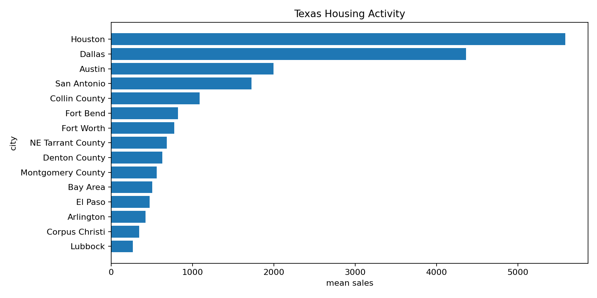

How does monthly sales volume differ across cities?
The largest observed mean sales is 5,582.882 for Houston. This ranking is descriptive, not a recommendation.

| segment | rows_used | metric | minimum | maximum |
|---|---|---|---|---|
| Abilene | 187 | 150.486631 | 68.0 | 268.0 |
| Amarillo | 187 | 238.652406 | 67.0 | 390.0 |
| Arlington | 187 | 423.983957 | 173.0 | 720.0 |
| Austin | 187 | 1996.689840 | 914.0 | 3466.0 |
| Bay Area | 187 | 502.614973 | 230.0 | 849.0 |
| Beaumont | 187 | 177.058824 | 83.0 | 318.0 |
| Brazoria County | 173 | 94.231214 | 31.0 | 165.0 |
| Brownsville | 185 | 65.518919 | 23.0 | 130.0 |
| Bryan-College Station | 187 | 186.743316 | 55.0 | 414.0 |
| Collin County | 187 | 1084.983957 | 464.0 | 1861.0 |
| Corpus Christi | 186 | 344.086022 | 158.0 | 565.0 |
| Dallas | 187 | 4364.288770 | 2194.0 | 7117.0 |
| Denton County | 187 | 627.834225 | 269.0 | 1161.0 |
| El Paso | 187 | 473.818182 | 229.0 | 774.0 |
| Fort Bend | 187 | 818.652406 | 343.0 | 1541.0 |
| Fort Worth | 187 | 774.283422 | 325.0 | 1334.0 |
| Galveston | 186 | 82.602151 | 23.0 | 160.0 |
| Garland | 187 | 193.545455 | 87.0 | 302.0 |
| Harlingen | 162 | 68.845679 | 9.0 | 127.0 |
| Houston | 187 | 5582.882353 | 2653.0 | 8945.0 |
| Irving | 187 | 120.101604 | 63.0 | 205.0 |
| Kerrville | 83 | 42.819277 | 19.0 | 81.0 |
| Killeen-Fort Hood | 186 | 221.940860 | 101.0 | 443.0 |
| Laredo | 151 | 81.344371 | 25.0 | 125.0 |
| Longview-Marshall | 175 | 182.194286 | 73.0 | 292.0 |
| Lubbock | 186 | 263.973118 | 110.0 | 468.0 |
| Lufkin | 187 | 52.556150 | 20.0 | 101.0 |
| McAllen | 185 | 162.172973 | 64.0 | 261.0 |
| Midland | 112 | 147.821429 | 68.0 | 218.0 |
| Montgomery County | 187 | 559.299465 | 226.0 | 1032.0 |
| NE Tarrant County | 187 | 684.529412 | 308.0 | 1155.0 |
| Nacogdoches | 176 | 31.960227 | 14.0 | 63.0 |
| Odessa | 115 | 98.539130 | 32.0 | 168.0 |
| Paris | 187 | 35.497326 | 14.0 | 93.0 |
| Port Arthur | 185 | 66.989189 | 20.0 | 106.0 |
| San Angelo | 187 | 113.882353 | 27.0 | 183.0 |
| San Antonio | 187 | 1722.443850 | 820.0 | 2962.0 |
| San Marcos | 141 | 25.049645 | 6.0 | 63.0 |
| Sherman-Denison | 187 | 104.529412 | 44.0 | 192.0 |
| South Padre Island | 71 | 28.718310 | 9.0 | 54.0 |
| Temple-Belton | 176 | 132.392045 | 56.0 | 241.0 |
| Texarkana | 170 | 80.770588 | 39.0 | 195.0 |
| Tyler | 187 | 248.433155 | 109.0 | 456.0 |
| Victoria | 187 | 69.235294 | 34.0 | 124.0 |
| Waco | 168 | 176.035714 | 52.0 | 285.0 |
| Wichita Falls | 187 | 137.229947 | 71.0 | 226.0 |
Mean monthly sales depends on city size and available months; missing months are not zero sales.
Compare matched calendar periods and normalise by housing stock.